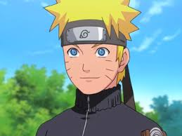
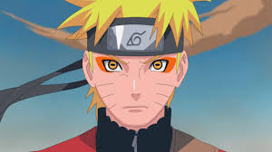

Naruto Uzumaki (うずまきナルト, Uzumaki Naruto) est un ninja du village caché de Konoha. Il devint le jinchûriki de Kyûbi le jour de sa naissance — ce qui lui valut d'être rejeté par la plupart des habitants de Konoha durant toute son enfance. Après avoir rejoint l'Équipe 7, Naruto travailla dur pour obtenir la reconnaissance des villageois tout en poursuivant son rêve de devenir Hokage. Dans les années qui suivirent, après de nombreuses péripéties et épreuves, il devint un ninja considéré comme un héros par les villageois et plus tard par le reste du monde. Il prouva rapidement être l'un des acteurs majeurs de la Quatrième Grande Guerre Shinobi, lui permettant de réaliser son rêve et de devenir le Septième Hokage (七代目火影, Nanadaime Hokage, Signifiant littéralement : Septième Ombre du Feu).Naruto Uzumaki (うずまきナルト, Uzumaki Naruto) est un ninja du village caché de Konoha. Il devint le jinchûriki de Kyûbi le jour de sa naissance — ce qui lui valut d'être rejeté par la plupart des habitants de Konoha durant toute son enfance. Après avoir rejoint l'Équipe 7, Naruto travailla dur pour obtenir la reconnaissance des villageois tout en poursuivant son rêve de devenir Hokage. Dans les années qui suivirent, après de nombreuses péripéties et épreuves, il devint un ninja considéré comme un héros par les villageois et plus tard par le reste du monde. Il prouva rapidement être l'un des acteurs majeurs de la Quatrième Grande Guerre Shinobi, lui permettant de réaliser son rêve et de devenir le Septième Hokage (七代目火影, Nanadaime Hokage, Signifiant littéralement : Septième Ombre du Feu).
Bonne visite

